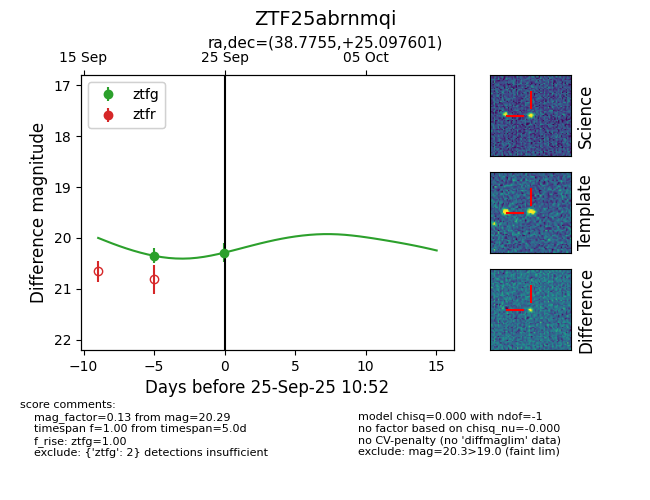
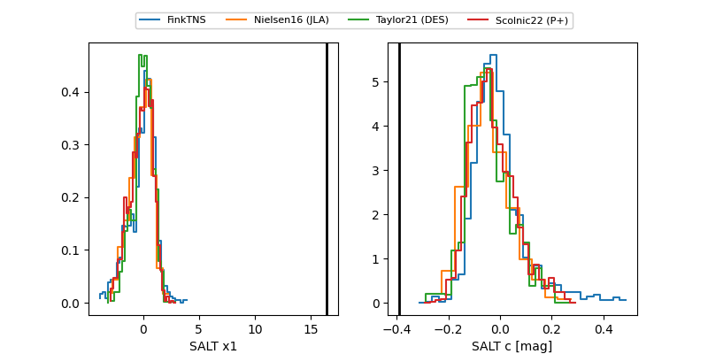

FINK: ZTF25abrnmqi
Lasair: ZTF25abrnmqi
ALeRCE: ZTF25abrnmqi
ZTF25abrnmqi (ztf,fink)
equatorial (ra, dec) = (38.7755,+25.09760)
galactic (l, b) = (150.7880,-32.10681)


last ztfg=20.29
2 ztfg detections